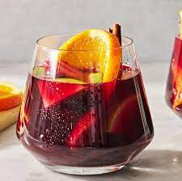

Sangria Recipe

Description:
Sangria is a mixed alcoholic drink from Spain. The color of Sangria depends on the wine. Red Sangria is made with red wine and white Sangria is made with white wine.
Ingredients:
- Red Wine
- Brandy
- Triple Sec
- Fruit Juice
- Sugar (optional)
- Carbonated Water (optional)
- Fruit
Steps:
- Gather all ingredients
- Mix together red wine, brandy, triple sec, lemonade concentrate, orange juice, lemon juice, and sugar in a bowl. Add orange, lemon, and lime slices and maraschino cherries.
- Serve immediately over ice, or refrigerate for 8 hours to overnight for best flavor. For a flizzy sangria, add club soda just before serving.
Other Recipes: